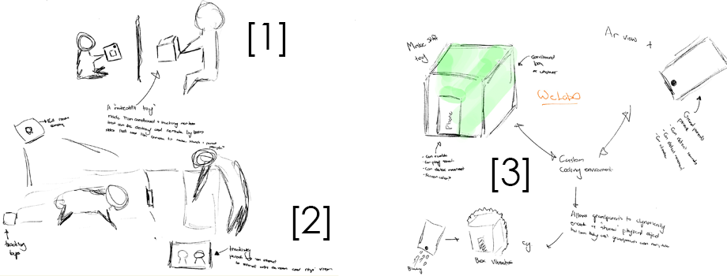
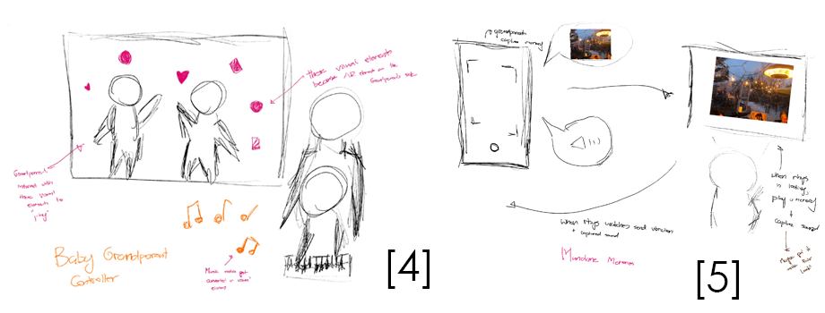
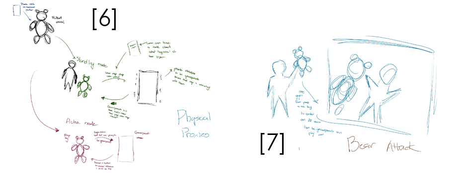
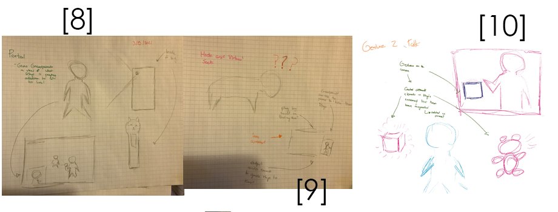
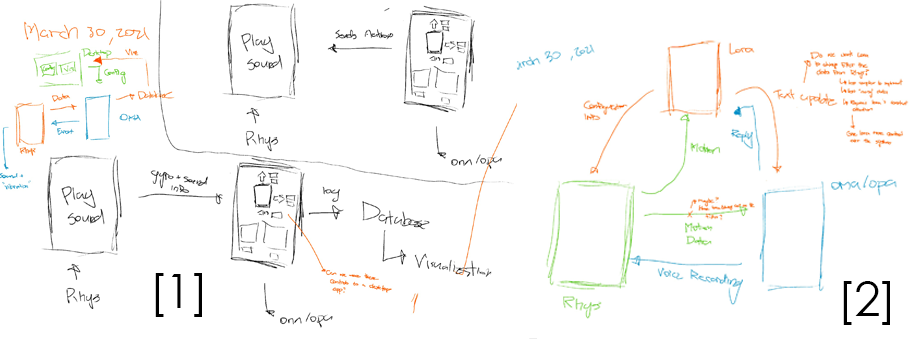
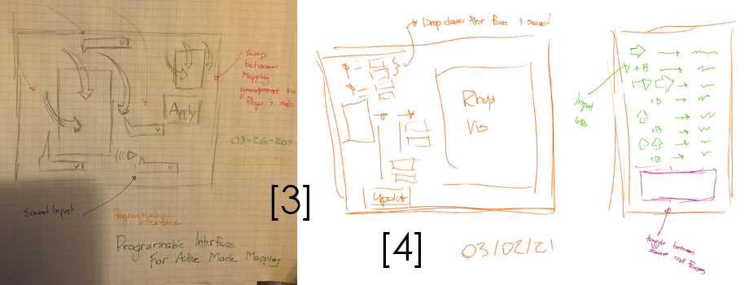
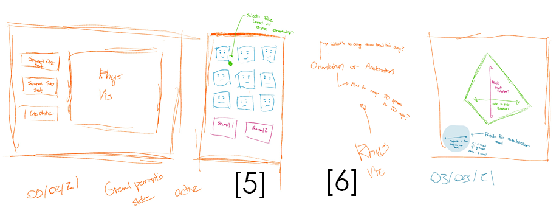
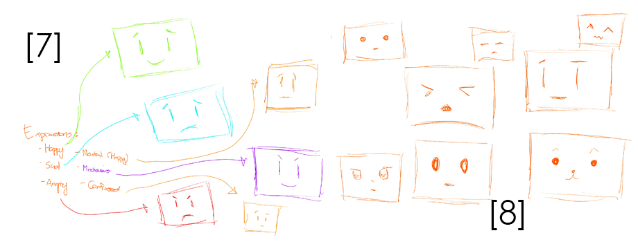
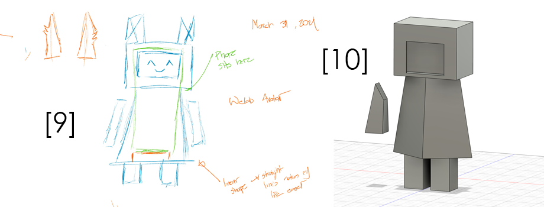

Usabo
CPSC 581 - Assignment 2
While video calls are a powerful tool for maintaining long distance relationships, the lack of physical presence can make it difficult for children make the connection.
Usabo looks to bridge that gap by providing a physical proxy in order to help foster a long distance strong connections.
Usabo uses a smartphone to create an augmented smart toy that can be used to create physical play experiences through video calls as well as being a persistent physical reminder for a child of their long distant relationships.
(sound effects from zapsplat.com)
(sound effects from zapsplat.com)
Video Demo
How Does It Work

The Robot
In order to be as accessible as possible, Usabo consists only of a smartphone and a chipboard body.
The body was designed to take minimal tools and skills to construct.
All it takes to make the robot shell is cardboard, a printer, tape and a knife (along with some patience)!
The instructions for the body can be found above.
Playtime - Controlling
During playtime, a long distance relative can take control of Usabo using the controller app.
The controller can use physical actions with their phone to control the sounds that Usabo plays and the facial expressions that Usbao shows.
The mapping are customizable in order to allow the user to find the set up that allows that to fit the relationship the best.


Playtime - Feedback
Sometimes you lose sight of a toy (or a child!) on a video call, but no need to worry!
The controller app visualizes of the state of Usabo, so you always know what's happening!
Beyond Playtime
But what happens when playtime ends?
For strong relationships, the sharing the mundanity of everyday life is important as well.
Usabo remains an persistent embodiment of your relationship even when the calls end. You'll get updates when Usabo gets played with, so you know when they're thinking about you.


Beyond Playtime - Responding
When in inactive mode, you can change Usabo's facial expression to give a subtle message that you're paying attention.
Design Process
Initial Sketches




While my initial ideas went in many different directions, one constant theme was needing to add physicality to the interaction.
For example, both [1] and [3] look at taking makeshift objects and embedding smart elements into the object to create either shared toys or shared physicality.
[7] and [10], on the other hand, try to blend the virtual and the physical.
In [7], I played with the notion of a physical toy projected in a shared virtual space.
On the other hand [10] thinks about having virtual objects that a participant interactions with affecting physical objects.
[2] and [8] looks at ways of getting the long distance participants able to see from the perspective of the child.
[5] looks at ways of sharing mundane memories and [4] takes physicality more metaphorically and thinks about turning sounds of one participant into virtual objects for the other.
Finally [6] shows an early concept for Usabo.
Refining Usabo

These sketch start to think about how all the components of the system need to interact with each other in order to make Usabo work, in particular the types of data that need to be transmiited.


These show the different renditions of front end layout of Usabo controller.
In particular [3,4,5] look at thinking about a desktop site that allowed the customization features and ways of visualizing this customization.
[5] shows a different variantion where I went with the motion controls and that was a tilt control for the face.
[6] shows a early sketch of the visualization I wanted to do for feedback from the toy.

These sketchs show the different variations I went through with designing the face of Usabo

Finally these sketches show the design concept for the Usabo body